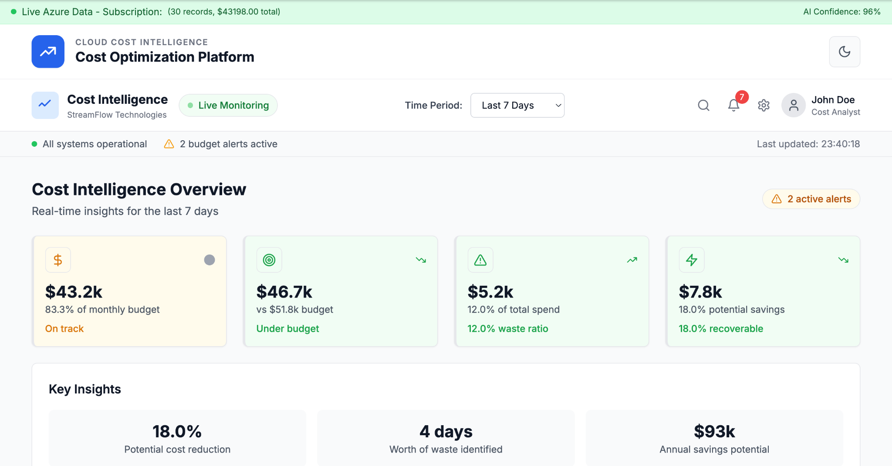

FEATURED · MULTI-CLOUD · AI
AI-Powered Multi-Cloud Cost Intelligence Platform
Built a FinOps platform that brings Azure, AWS, and GCP cost data into one workflow for monitoring, anomaly detection, forecasting, root-cause analysis, and optimization recommendations.
30cost records
$48.8Kspend analyzed
$8.8Kopportunity
96%AI confidence